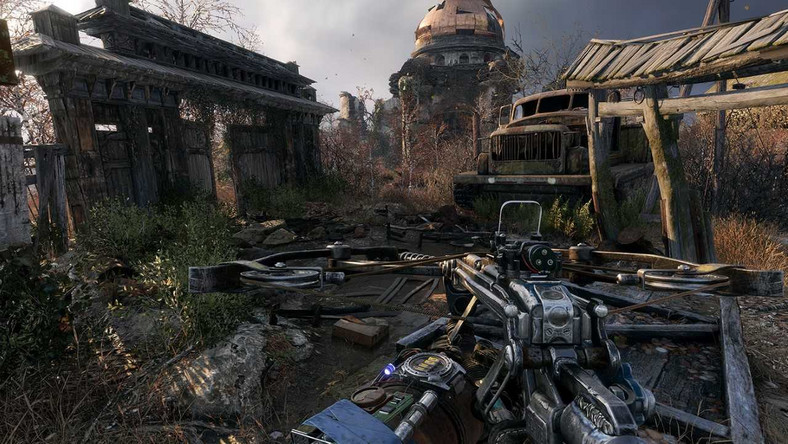

Metro: Exodus - это сиквел Metro: Last Light, события которого разворачиваются в постапокалиптическом мире. Игра продолжает сюжет предыдущей части, позволяя выжившим покинуть постъядерную Москву. На паровозе под названием "Аврора" Артем и его товарищи отправляются в огромный мир, наполненный приключениями и опасностями, чтобы найти новый уголок, пригодный для жизни.
В отличии от Last Light, Exodus предлагает игрокам не просто коридорные локации, но ряд огромных открытых локаций, которые связаны между собой сюжетом. Каждая локация предлагает игрокам свои уникальные испытания, врагов и условия, кроме того, каждая из них имеет важное влияние на сюжет. Тем не менее, Metro - не S.T.A.L.K.E.R., поэтому перемещаться по локациям взад-вперед нельзя - Артем может двигаться только вперед по сюжету, поэтому возвращаться на старые локации нельзя.

Игровой процес
Metro Exodus является шутером от первого лица с элементами survival horror и стелс-экшен. Действия проходят на постапокалиптических пустошах территории Российской Федерации и в Республике Казахстан, где игрок должен справляться с новыми опасностями мира и участвовать в борьбе против мутировавших существ, а также враждебно настроенных людей. Игрок владеет арсеналом огнестрельного и метательного оружия, которое может быть улучшено. В игре представлена смесь линейных уровней и открытых локаций, доступных для исследования игроком. Также присутствует динамическая система погоды, цикл дня и ночи и смена сезонов времён года по мере продвижения истории.
Синопсис
Действие Metro Exodus происходит в 2035 году на постапокалиптической Земле, которая была разрушена в результате ядерной войны более 20 лет назад, в 2013 году[1].
Игра продолжает историю хорошей концовки Metro: Last Light, которая принята за канон. Главный герой — Артём, с группой выживших рейнджеров ордена «Спарты» отправляется в путешествие из метрополитена Москвы на модифицированном паровозе «Аврора» и едет далеко на восток, искать новое место для жизни в постапокалиптической России. История начинается c суровой ядерной зимы и происходит в течение одного года. Другой персонаж игры, вернувшийся из предыдущих игр и книги «Метро 2035», — Анна, которая теперь является женой Артёма.
Разработка
Metro Exodus разрабатывается украинской компанией 4A Games на обновлённом игровом движке 4A Engine. Разработка игры началась в 2014 году в двух офисах 4A Games, расположенных в Слиме (Мальта) и Киеве (Украина). По словам творческого директора проекта Андрея Прохорова, игра совмещает в себе типичный игровой процесс серии Metro и некоторые элементы «S.T.A.L.K.E.R.: Тень Чернобыля».